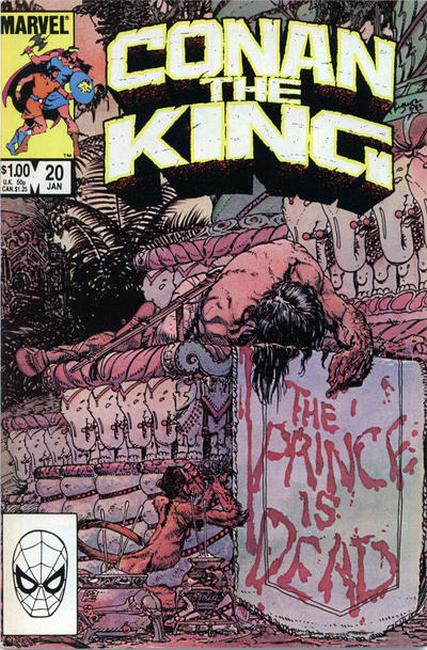

Fantasy-filled first issue! Mightiest monarch of a time-lost land! Face to face with Thoth-Amon! "The Witch of the Mists" is written by Roy Thomas, with art and cover by John Buscema and Ernie Chan. Note: Adapted from "The Witch of the Mists" by DeCamp and Carter.

Becomes Conan the King with issue #20.
A major turning point in the kingly career of our sullen Cimmerian! "The Prince Is Dead..." and the news of his son's death drives Conan to abdicate the throne of Aquilonia! What lies in store? Plus - the never-before-revealed story of how Conan became King Conan in the first place! Special note - look especially carefully, 'cause this title sports a brand new cover logo starting with this issue! Written by Alan Zelenetz, with pencils by Marc Silvestri. Cover by Mike Kaluta.